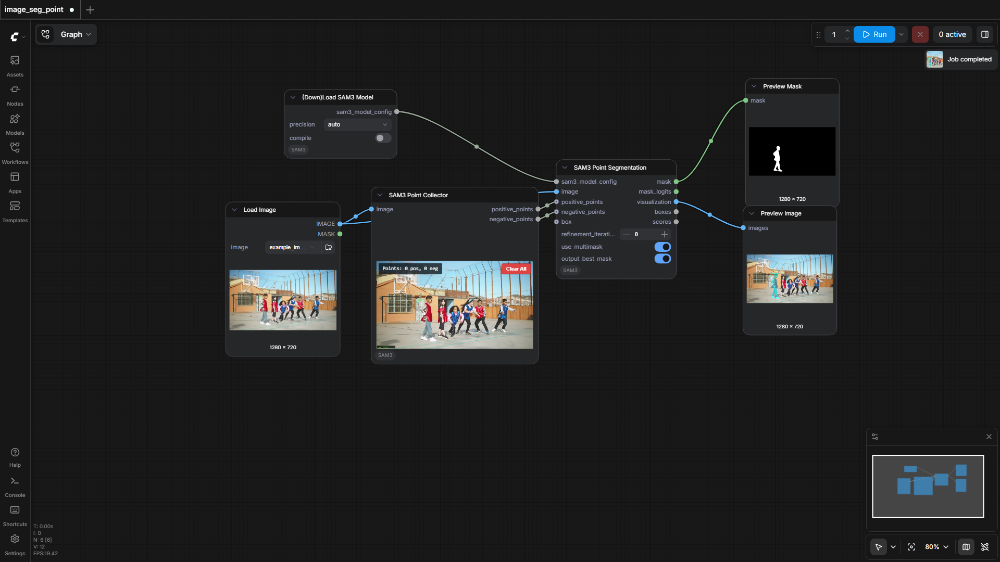
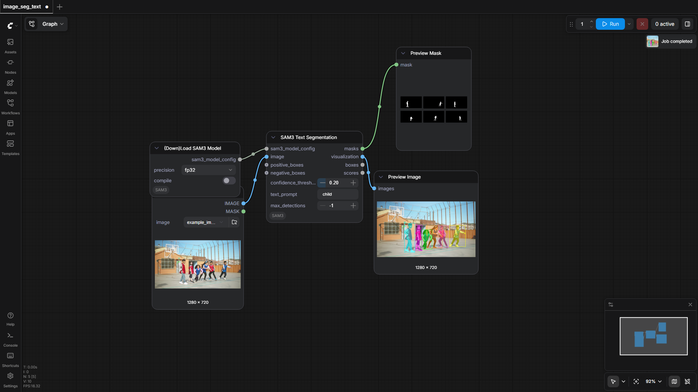
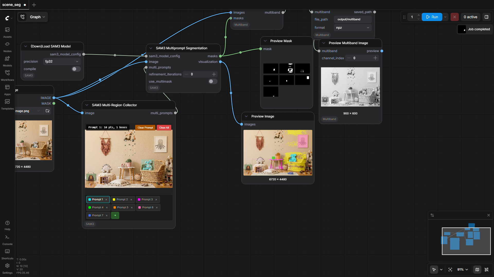
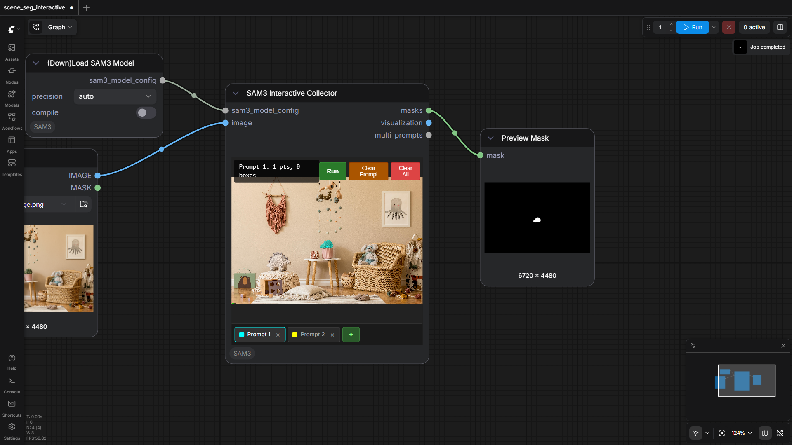
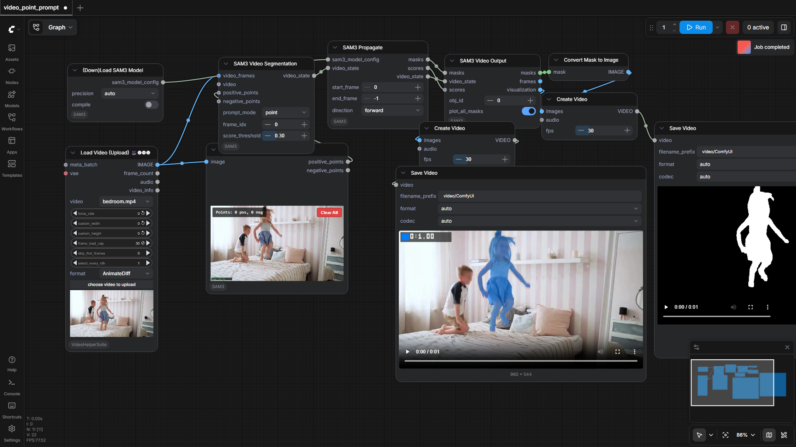

PozzettiAndrea/ComfyUI-SAM3
Test Results
2026-05-11 09:30 UTC
Windows-11-10.0.26200-SP0
Intel64 Family 6 Model 79 Stepping 1, GenuineIntel
100.0%
5 passed
5/5 tests
Workflows
Grid
List

image_seg_point
pass
113.69s

image_seg_text
pass
24.58s

scene_seg
pass
35.08s

scene_seg_interactive
pass
27.69s

video_point_prompt
pass
75.78s
Downloaded Models
1 files · 3.2 GB
models/sam3/
3.2 GB
sam3.safetensors
3.2 GB
×
‹
›
0.0s / 0.0s
Resource Usage
RAM (GB)
VRAM (GB)